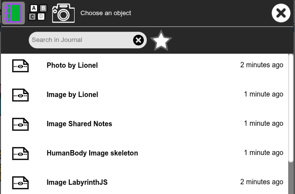
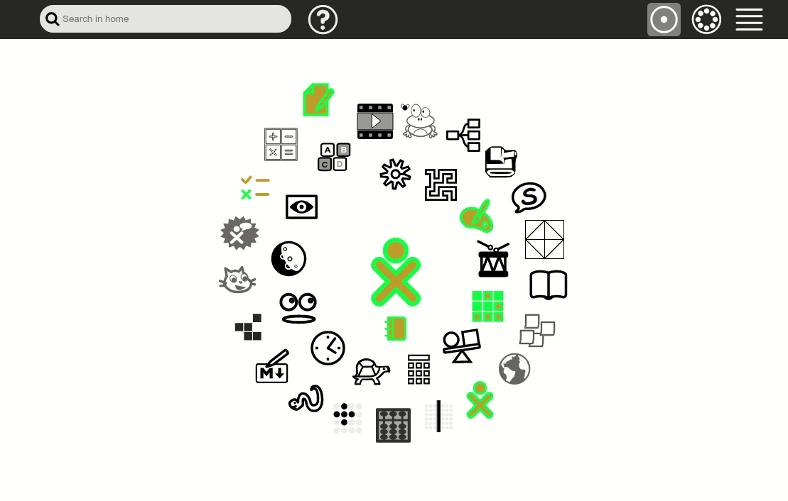
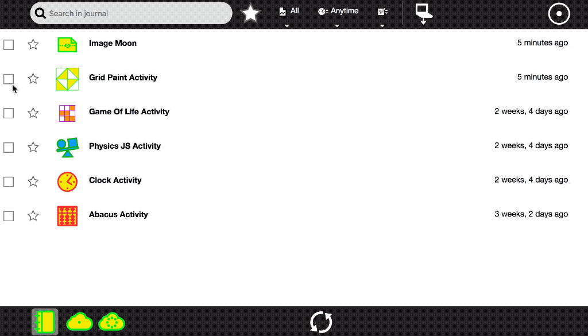

Activities and their Ecosystem in Sugarizer
One of Sugarizer’s major strengths is its integrated vision of learning. Activities are not just isolated applications: they interact with each other and with the platform to create a coherent ecosystem, centered on the learner and their creations.

A network of interconnected activities
Each Sugarizer activity can be used on its own, but the real magic happens when you combine them. Content created in one activity can often be reused, enhanced, or transformed in another.
For example:
-
A drawing made in Paint can be inserted into a Write document or a Fototoon comic strip.
-
An image from Abecedarium can be used to create a quiz in Exerciser or a memory game in Memorize.
-
In several creative activities, you can directly use a photo captured with the device’s camera.
This interconnection encourages creativity, knowledge reuse, and project-based work.
The Journal: the heart of the ecosystem
The Sugarizer Journal plays a central role in these exchanges. Whenever a learner creates, modifies, or saves something, their work is recorded in the Journal.
From any activity, you can:
-
Insert content already present in the Journal (for example, a photo or drawing created earlier).
-
Export a new creation to the Journal to find it later or share it.
The Journal thus becomes a memory of learning, where each activity helps build a personal story.
Openness to other sources
Activities are not limited to the Journal: they can also access content from other sources available on the platform.
For example:
- Insert items from the Abecedarium library, an integrated educational resource base.

- Capture an image directly with the device’s camera to use in an activity.

This flexibility makes the experience smoother and closer to the digital reality of learners.
Exchanging with your device
Sugarizer also makes it easy to exchange files between the platform and the user’s computer (or tablet). This always happens via the Journal, ensuring consistency and traceability of learning.
You can:
-
Import an image from your device into the Journal, to reuse it later in an activity.
-
Export content from the Journal to your device, to keep, print, or share it.

Thanks to this, Sugarizer integrates into the learner’s digital environment while maintaining its own educational logic.
An ecosystem serving learning
By connecting activities and facilitating content exchange, Sugarizer creates a true educational ecosystem. Learners learn to create, reuse, transform, and share, rather than just consume static content. It’s an approach that encourages curiosity, collaboration, and the progressive construction of knowledge.